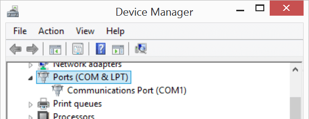

-
Launch Device Manager.
Windows 7 and below:
- Open Start menu.
- Start typing “device manager” in the search field.
- Select “Device Manager” under “Control Panel”

Windows 8:
- Go into Windows Desktop mode.
- Right-click on the Start menu button.
- Select “Device Manager”.

-
In Device Manager, locate and toggle open “Ports (COM & LPT)”.
